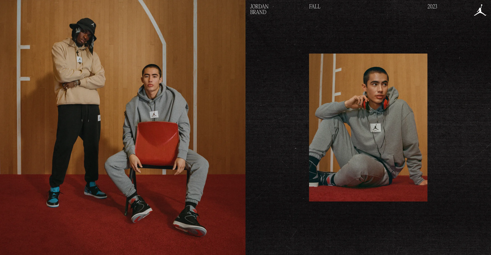
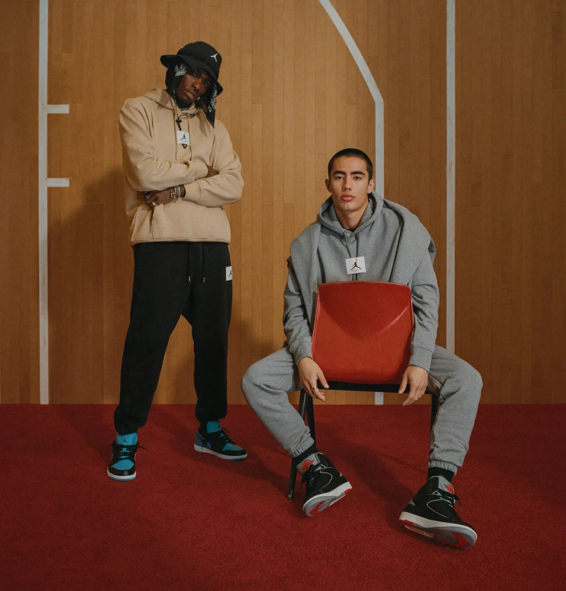
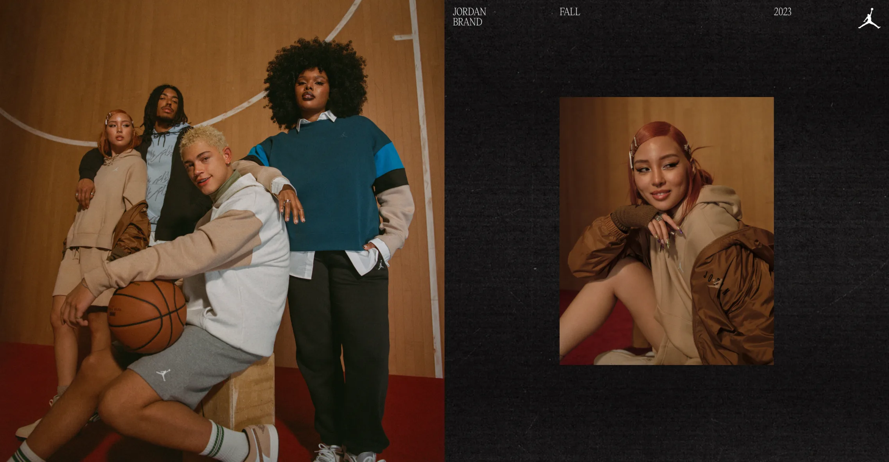
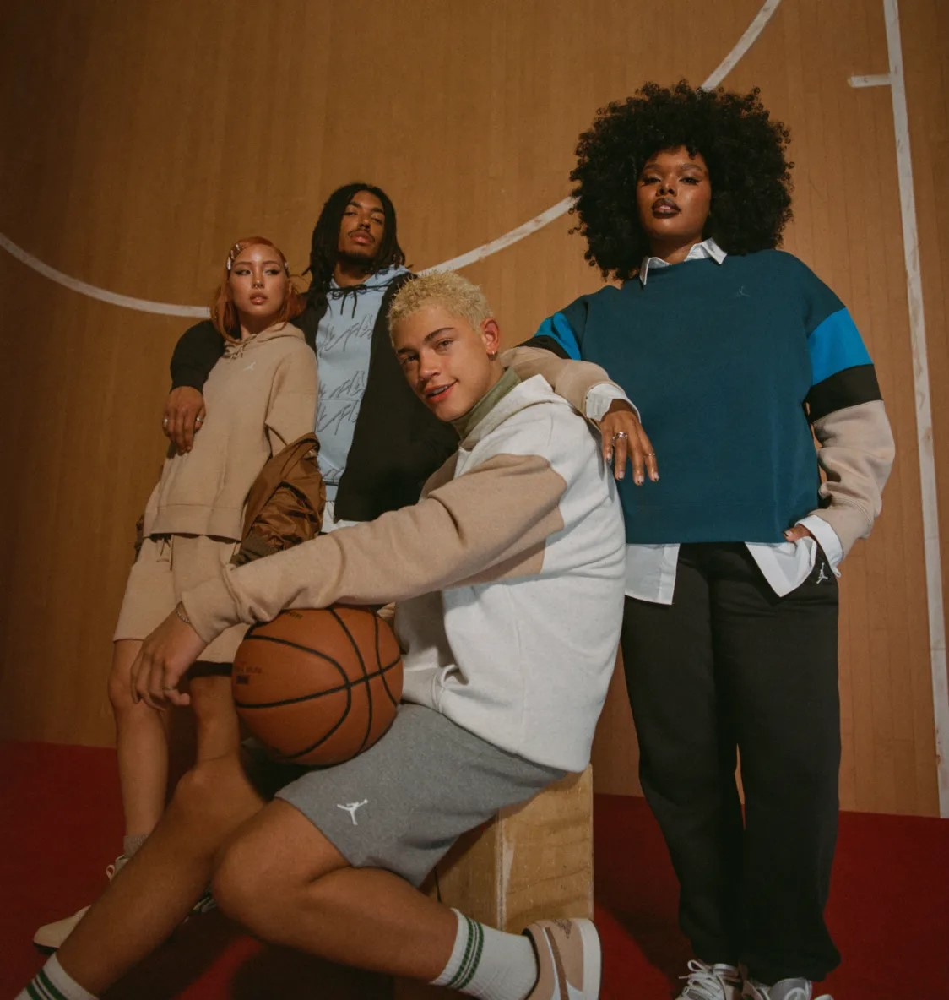
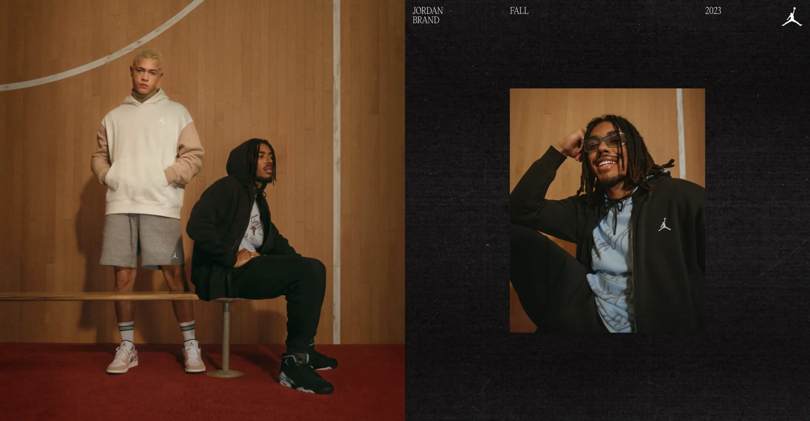
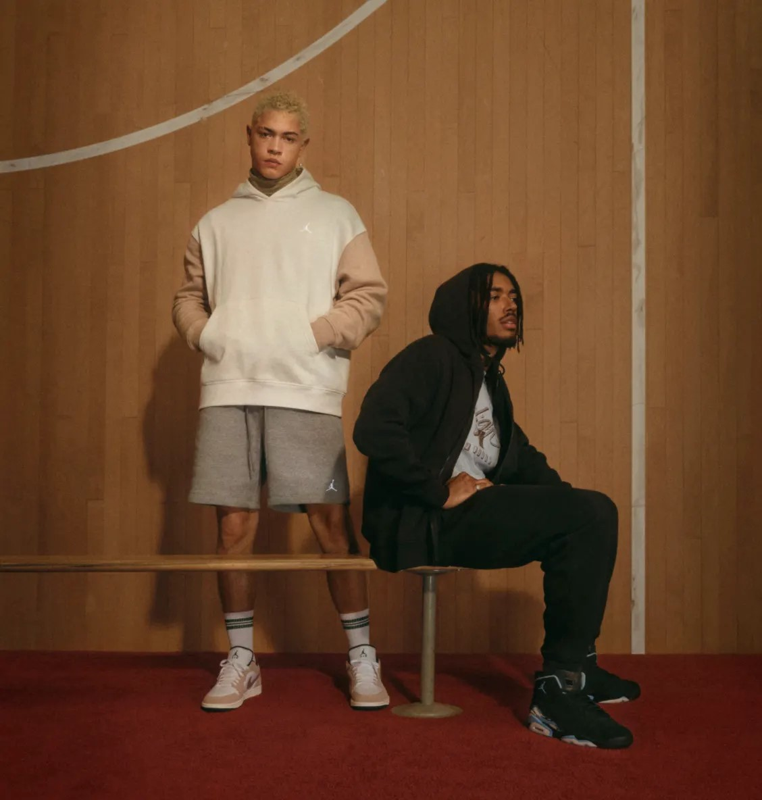
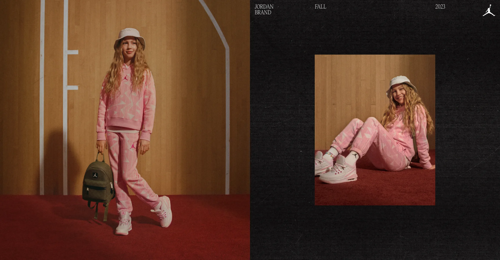
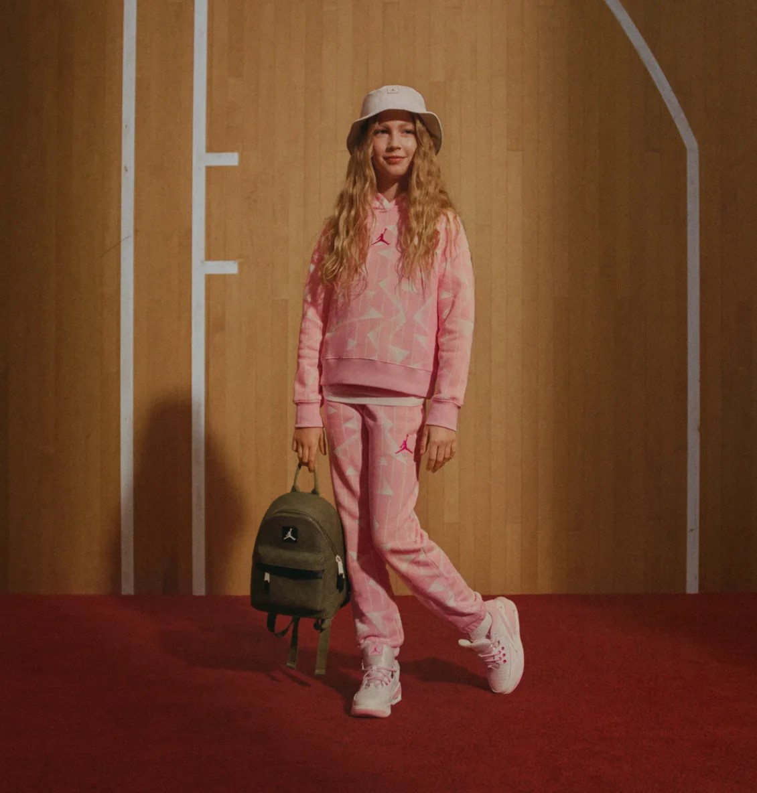

Luka 2
"ZION III"
Les Zion III « Mud, Sweat, and Tears », c'est l'ultime expression du style robuste. Inspirées par l'effort, la persévérance et la détermination, ces baskets repoussent les limites du design. Leur silhouette audacieuse et résistante est parfaite pour affronter tous les défis du quotidien, offrant un confort inégalé même dans les conditions les plus difficiles. Que vous soyez un aventurier en quête de nouvelles expériences, un amateur de musculation cherchant à repousser vos limites ou simplement un passionné de mode à la recherche de chaussures au caractère bien trempé, les Zion III sont un choix incontournable. Avec leur logo distinctif, elles ajoutent une touche d'authenticité à votre style. Alors, si vous êtes prêt à embrasser l'aventure et à faire face à tous les obstacles avec style, les Zion III « Mud, Sweat, and Tears » sont là pour vous, quel que soit votre chemin dans la vie. 👟💪😎
AcheterTENDANCES DU MOMENT
 Jordan Men
STATEMENT FLEECE
Nos modèles classiques en coton brossé Statement Fleece présentent des cordons de serrage à embouts métalliques et des écussons Jumpman tissés. Résultat : un confort total et un style parfait en toutes situations, pour aller à la salle de sport ou rester tranquille à la maison.
AcheterJORDAN WOMEN
 Vêtement Jordan
BROOKLYN FLEECE
Cette saison, reste classe avec un tissu Fleece à base de coton et une palette de couleurs dégradées inspirées des gratte-ciel de Chicago.
AcheterJORDAN MEN
 Jordan Men
BROOKLYN FLEECE
Un tissu à base de coton et une capuche à deux empiècements doublée en jersey : le combo parfait pour t'envoler et rester sur ton petit nuage.
AcheterJORDAN KIDS
 Jordan Kids
KIDS FLEECE
The super-soft, brushed back fleece keeps it cozy, while vibrant colors, patterns and iconic Jumpman patch lets your kids’ style shine through.
Shop